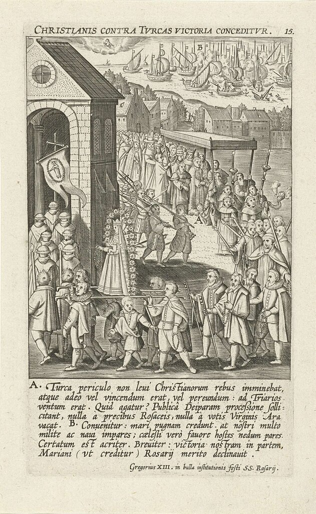
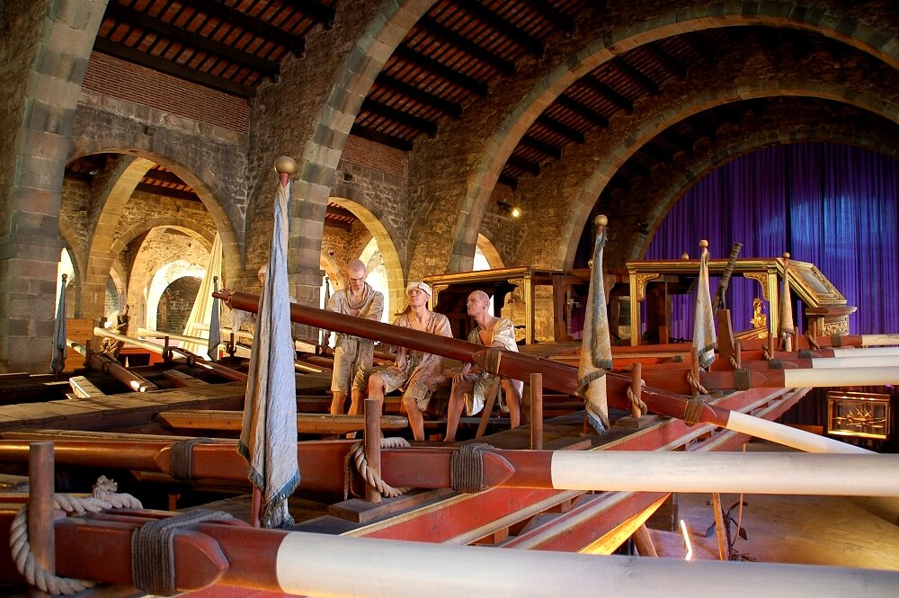
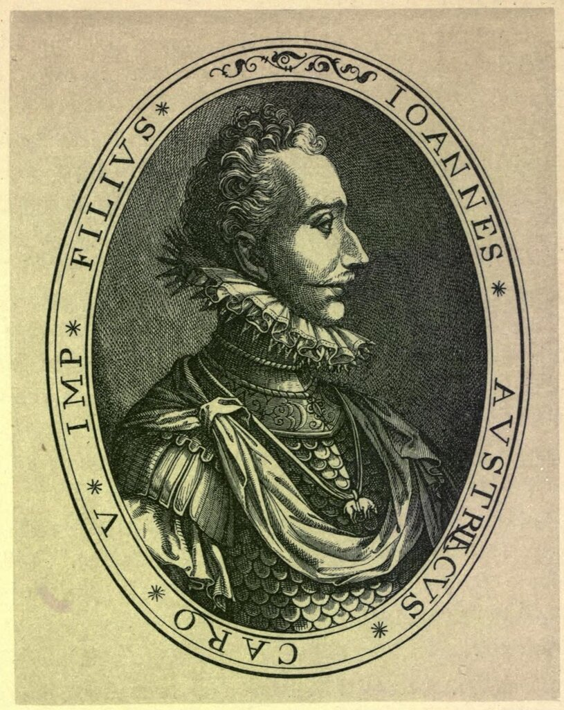
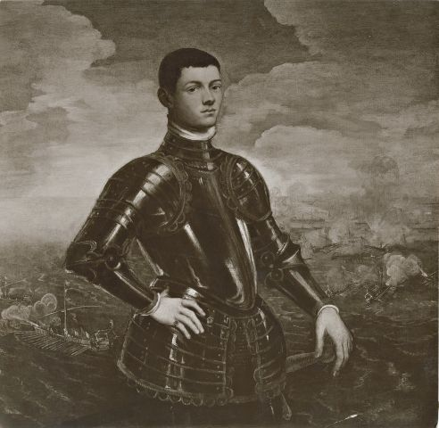
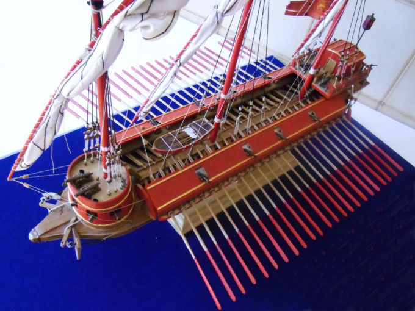
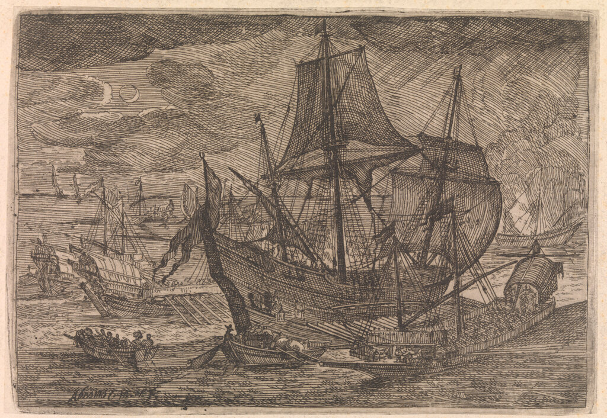

Священная Лига-1572: попытка реанимировать объединенный христианский флот
― Да что ж это за феникс такой? …
― Не феникс, а весьма милая и, как вы видели, довольно красивая особа, с шестью миллионами капитала…
А. В. Амфитеатров. Умница

Празднование победы при Лепанто.
Затянувшиеся празднества по поводу победы над турками, которые проходили в столицах всех стран-участниц Священной лиги, не заслонили опасений руководства Венецианской республики в связи с сохраняющейся турецкой военной угрозой. Дож и Сенат Светлейшей 3 ноября 1571 года направили своим послам в Испании Леонардо Донадо и Антонио Тьеполо специальное письмо, проникнутое чувством озабоченности в связи с развитием военно-политической обстановки в регионе. Венецианские руководители пишут, что хотя мощь турок на море уже не та, что была до разгрома их при Лепанто, Османская империя остается чрезвычайно сильной на суше. Под ружьем у султана большое число пехотных частей и конницы. Необходимо воспользоваться победой христиан на море и в предстоящую зиму создать угрозу туркам на всех приморских направлениях. «Имеется счастливый шанс захватить у османов большие территории.» Послы должны, говорится в документе, добиваться аудиенции у короля Испании и настоятельно просить его решения на то, чтобы христианский флот остался на зимовку в территориальных водах Турции, что будет способствовать успешному завершению начатой при Лепанто миссии.
Но руководство Испании не спешит отвечать взаимностью на призывы Венеции. В резиденции понтифика в Риме появилась информация, что Дон Хуан предложил королю Филиппу II выйти из объединенного флота Лиги и в конце февраля направиться к берегам Северной Африки с целью захвата Туниса. Прими Филипп это предложение, на судьбе экспедиции против турок в Леванте в 1572 году можно будет поставить крест. Папа Пий V принимает срочные меры по спасению коалиции. 12 декабря он собирает совещание, на которое приглашены представители испанской короны и венецианской республики. Папа говорит, что золотой шанс еще не потерян, что необходимо лишь восстановить единство участников Лиги в их взглядах на способы достижения конечной цели. Но совещание погрязает во взаимных претензиях, у участников отсутствует единое понимание в вопросе распределение расходов по предстоящей кампании. Испания, естественно, настаивает на выделении большей части сметы для той части флота, которая направится к берегам Северной Африки, а Венеция – на финансировании левантийской составляющей будущих операций флота.

Невольники на веслах флагманской галеры Дона Хуана. Museo Marítimo de Barcelona.
Пока в Риме продолжались дипломатические баталии, командование флотами в спешном порядке пыталось восполнить потери в личном составе своих кораблей. Дон Хуан занят вербовкой новых наемников для флота в Германии. Он хочет нанять там 6000 человек, но средств для этого в испанской казне нет. Через испанского посла в Венеции Диего Гусмана де Сильва отправлено обращение к дожу и Сенату с просьбой выделить суда для транспортировки шести тысяч воинов в Отранто и предоставить заем в 36 000 дукатов на оплату этих наемников. Венеция в кораблях отказывает, ссылаясь на то, что у Светлейшей стоит та же проблема с доставкой тысяч человек для своего флота, необходимых предметов снабжения и боеприпасов для восполнения истощившихся запасов. Венецианцы предлагают обратиться за кораблями к Рагузе. Что касается займа, то Венеция может выдать его наличными в Мессине, а еще лучше – часть его компенсировать поставками морских сухарей для испанского флота.
Аргументы Венеции о напряженности с доставкой людей на корабли своей эскадры не были отговоркой. Флот Светлейшей испытывал острый дефицит гребцов на галерах. Сенат просит Веньера еще раз проверить всех захваченных при Лепанто пленных, чтобы отобрать среди ник как можно больше человек, пригодных к использованию на веслах. Веньеру дается право платить собственникам рабов от 15 до 20 дукатов за человека. Галерные рабы, которых удастся купить, должны быть здоровы, полностью экипированы одеждой, и закованы в кандалы, чтобы не разбежались. Аналогичные письма были направлены проведитору Адриатики Филиппо Брагадину и командующему эскадрой галеасов Франческо Дуодо. С приближением весны цены на рабов поднялись до 25 дукатов за каждого турецкого пленного, или пленника из христианской страны, «который может нанести ущерб нашему общему делу» ("dobbiate in quelle parli di Levante pagar cadauno Turco che vi fusse appresentato over suddito Turchcsco, seben Christiano, che havesse fatto danni alle cose nostre, et fusse atto et bon per galea dalli XXV ducati in giù. . . .") – лицемерная формулировка, оправдывающая использование христиан в качестве рабов на галерах, вопреки возражениям со стороны папы.
Мы можем, вместе с многочисленными историками, утверждать, что Венеция искала мира с Османской империей и все ее мероприятия по подготовке к будущим схваткам с турецким флотом служили лишь ширмой для закулисных переговоров. Однако не будем так категоричны. Венеция искренне хотела поражения турок на море. Но венецианцы были всегда очень практичны, были расчетливыми реалистами, чтобы не понимать: в одиночку им с турками не совладать, а сподвигнуть на совместную борьбу испанцев вряд ли удастся. Испанская корона выдвигала одно условие своего участия в будущей кампании за другим. Сейчас настала очередь персоналий. Дон Хуан ни в какую не хотел смириться с присутствием Себастьяна Веньера во главе венецианского контингента коалиции.

Дон Хуан Австрийский
В те дни Веньер, еще не остывший от сражения при Лепанто, готовил свой флот к новым схваткам с турками. В письме Сенату от 24 декабря Веньер пишет, что у него имеется шестьдесят четыре боеспособных галеры, которые он планирует безотлагательно направить с Корфу в Левант для атаки турецких владений. Но дож и Сенат не дают герою Лепанто приступить к делу: они просят (письмо от 19 января 1572 года) не отдаляться далеко от базы на Корфу, так как надеются, что именно на Корфу весной будет формироваться объединенный флот коалиции; именно в начале марта ожидается прибытие туда эскадр Дона Хуана и папы. Веньер получает команду довести свой флот до ста галер и шести галеасов, оснастить их артиллерией, боеприпасами, продовольствием и другими предметами снабжения, необходимыми для успешной кампании. Сенат обязуется направить Веньеру с первыми же двумя галерами с морскими сухарями для флота 100 000 дукатов на означенные выше цели. Еще 100 000 дукатов Веньер должен будет получить с капитаном галеасов, которые готовятся к переходу.
Но повседневные заботы о нуждах флота не заслоняли в Светлейшей проблемы совместимости Веньера с Доном Хуаном. И Филипп II, и Дон Хуан, а за ними и папа продолжали настаивать на смещении строптивого Веньера. От руководства республики требовалось найти решение проблемы, которое позволило бы, сохранив лицо, пойти на уступки партнерам по коалиции. И они его находят: отныне у Светлейшей будет два Адмирала флота, капитан-генерала морских сил республики: один возглавит эскадру, выделенную в состав объединенного флота, второй – «решать наиважнейшие дела республики». Естественно этим вторым станет Себастьяно Веньер, а первый должен быть безотлагательно избран тайным голосованием (per scrutinio) в Сенате.
Голосование состоялось в начале февраля 1572 года, новым капитан-генералом был избран проведитор Далмации Джакомо Фоскарини, о чем он был оповещен письмом от 5 февраля с предписанием немедленно отбыть на Корфу и принять флот.

Портрет Джакомо Фоскарини. Анонимный художник школы Тинторетто. После 1572. Palazzo Capello, Венеция
Срочно отправленный из Венеции в Зару сменщик Фоскарини на далматинском проведитерстве доставил новому адмиралу штандарт капитан-генерала. 200 тысяч дукатов, обещанных Веньеру, были также перенаправлены Фоскарини. Сам Веньер был надлежащим образом проинформирован о кадровых изменениях в командовании флотом. Старому флотоводцу предписывалось продолжать усилия по обеспечению флота гребцами и пополнению запасов продовольствия и амуниции для сотни галер, которые необходимо было подготовить к весеннему выходу в море. А чтобы не создавать неудобства новому командующему, Веньер должен покинуть Корфу и переместиться на остров Лесина (Хвар) вместе с разоруженными галерами, захваченными у турок. Там и передать дела Фоскарини. Таким образом, исключались всякие возможные контакты Веньера с Доном Хуаном. Венецианцы всегда очень прямы, иногда до резкости, в своих письмах. Поэтому и в послании Веньеру указывается, что он отстраняется от всех дел, связанных с лигой. Но чтобы подсластить эту горькую пилюлю, герою Лепанто предлагается «оснастить десять галер гребцами и воинами», чтобы старый воин мог чувствовать себя полезным на службе Венеции.
После устранения Веньера начался новый торг с испанцами по выработке обновленного договора о Священной лиге, который и был подписан в ватиканском дворце 10 февраля 1572 года. Вот краткое его содержание.
Испания окончательно соглашается, что военные действия в предстоящем году будут вестись в Леванте ("che la guerra et imprese di quest’ anno si faccino nelle parti di Levante."). Она отложит предложенную экспедицию против Туниса и Бизерты. Испанскии галеры вместе с галерами Святого престола и Венеции будут искать встречи с турецким флотом, или с тем, что от него осталось, в Леванте. Испанский флот должен встретиться с флотом понтифика в Мессине в марте, после чего без промедлений направится на Корфу для соединения с флотом Венеции. Предполагается довести численный состав объединенного флота до 250 галер и девяти галеасов.

Венецианский галеас. Модель.
Большую часть этих кораблей должна поставить Венеция. Святой престол поставляет 12 галер, а Филипп II – «не менее 100», а также по меньшей мере двадцать четыре парусных корабля (доля Светлейшей в парусном флоте – 16 единиц).

Парусные корабли и галеры. Гравюра Casembrot, Abraham, National Maritime Museum, Гринвич, Лондон
Папа должен погрузить на галеры 2000 пехотинцев, Филипп – 18 000 пехотинцев и 300 всадников, венецианцы – 12 000 человек пехоты и 200 кавалеристов. Финансирование кампании возлагалось в основном на Венецию и папу.
В договоре приводится подробнейший список предметов вооружения и обеспечения флота, основанный на опыте предыдущей кампании. Перечислено количество пушек, аркебуз, пик, мечей, доспехов, даже стальных рогаток (triboli) против конницы противника.
Документально новый военно-политический союз был оформлен безукоризненно. Оставалось дождаться его практического воплощения. Но об этом поговорим в следующий раз.